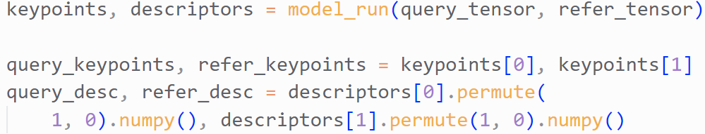
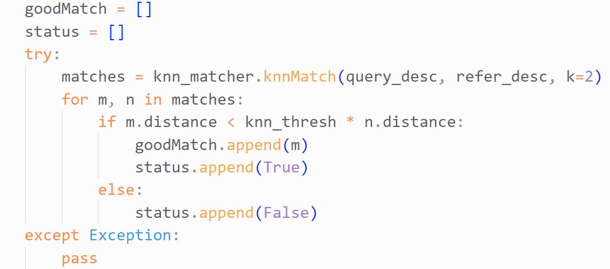
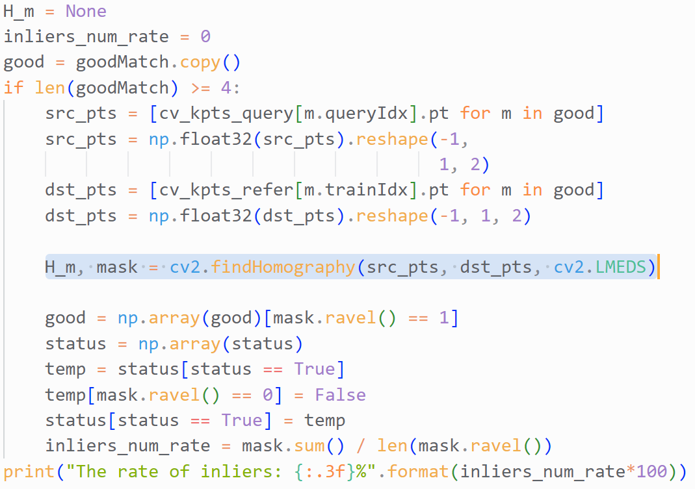
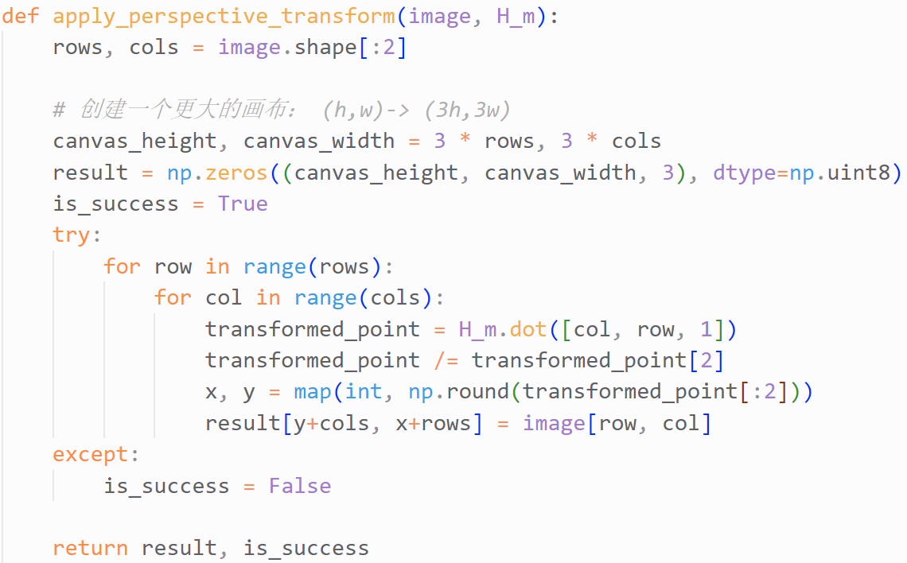
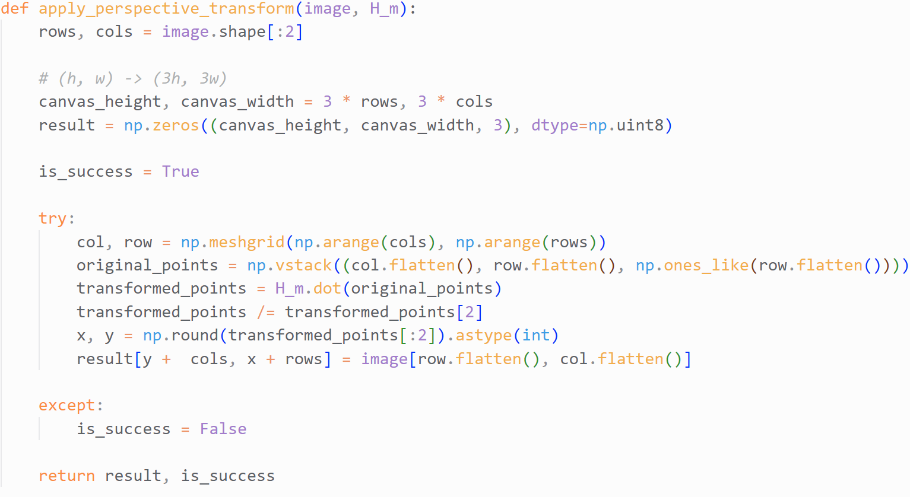
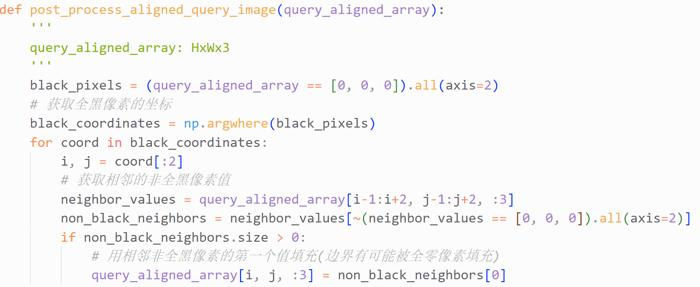

图像配准小结
更好的阅读体验，请移步微信公众号：
前置基础：三种图像变换
刚体变换
刚体变换包括平移和旋转操作，而不会产生形变。
假设某个像素点坐标为$(x,y)$，将其分别在x和y方向上平移了$t_x$和$t_y$，并且绕原点逆时针旋转了$\theta$度，变换后的像素点坐标记作$(x’,y’)$，对应的刚体变换可以用矩阵表示如下：
$$p’=M p$$
其中，
[
p=\begin{bmatrix}
x \
y \
1
\end{bmatrix}
]
[
p’=\begin{bmatrix}
x’ \
y’ \
1
\end{bmatrix}
]
[
M=\begin{bmatrix}
cos\theta & -sin\theta & t_x \
sin\theta & cos\theta & t_y \
0 & 1 & 1
\end{bmatrix}
]
进一步地，
[
R=\begin{bmatrix}
cos\theta & -sin\theta \
sin\theta & cos\theta \
\end{bmatrix}
]对应旋转操作，
且R是正交矩阵，即$RR^T=R^TR=I$
[
T=\begin{bmatrix}
t_x \
t_y \
\end{bmatrix}
]对应平移操作
仿射变换
将刚体变换对应矩阵M中的R替换成
[
A=\begin{bmatrix}
a_{11} & a_{12} \
a_{21} & a_{22} \
\end{bmatrix}
]，就得到了仿射变换矩阵，其中A是任意矩阵，不一定必须是正交矩阵。
仿射变换在刚体变换操作基础上，增加了缩放操作，不过仍会保持变换前后两条线的平行，可以看作是一种能够”保持直线性质”的均匀缩放。
透视变换
透视变换对应的矩阵如下：
[
M=\begin{bmatrix}
a_{11} & a_{12} & t_x \
a_{21} & a_{22} & t_y \
v_1 & v_2 & s
\end{bmatrix}
]
透视变换除了能完成平移、旋转操作外，还可以实现非均匀缩放和视角的投影。
关于图像配准定义的理解
图像配准用于将不同视角下的图像进行配准，使它们在同一坐标系下对齐。
举例来说，假设有A和B两张图像，A图像保持不动，对B图像做变换，使得变换后的B图像与A图像对齐，这样就完成了两张图片的配准。
这里，”对齐”指的是A和B两张图像在相似的内容特征位置近乎重合。
对于多张图像配准也如此，只需要选定一张图像作为基准保持不动，让其它图像都与该基准图像对齐，就可以完成多张图像的配准了(或许这里叫做多张图像的拼接更合适)。
在图像配准中，通常使用上面所讲的透视变换来完成，相应的变换矩阵通常被称为单应性矩阵。
如果将上面所讲的透视变换对应的3x3变换矩阵进行展开并做变换，可以得到2个方程。而变换矩阵中总共有3x3=9个未知数，自由度为8，因此至少需要4个形如(x,y)的点对才能求解出这个变换矩阵。
图像配准的一般步骤
假设query和refer是待配准的两张图像，配准步骤如下：
获取query和refer匹配的关键点(keypoints)+关键点描述符(keypoint descriptors)，这里可以使用传统的方法提取两者，或者使用目前主流的基于深度学习的方法
通过关键点描述符，过滤掉不匹配的关键点对
根据关键点对，求解方程计算单应性矩阵，即透视变换对应的矩阵H_m，这里可以直接调用
cv2.findHomography来求解H_m
将单应性矩阵应用到query上，就完成了透视变换，这一步可以直接调用
cv2.warpPerspective(但是存在一个问题，后面会讲到解决方法)
1 | query_aligned = cv2.warpPerspective(query, H_m, (h,w)) |
优化透视变换API —part1
cv2.warpPerspective无法处理变换后图像像素点位置超出图像范围的问题。
也就是说，变换后的图像可能只有一部分能够显示，另一部分像素点位置要么至少有一个小于0，要么至少有一个大于图像的高度或者宽度。
为了使得能够显示变换后的完整图像，这里我手动实现了上面所介绍的透视变换过程，代码如下：

上述代码其实就是对每个像素点逐个进行变换，并将结果绘制到更大的画布上，如果配准成功，那么两张图片一定存在重叠区域，因此3*height,3*width是完全够用的，如果变换后的像素点都超出了逐个范围，那么一定是配准失败的情况。
但是双层for循环比较慢，因此可以做向量化加速，加速后的代码如下：

优化透视变换API —part2
上述优化虽然解决了变换后图像显示不全的问题，但是又引入了一个新的问题，变换后的图像中存在孔洞。由于设置的大画布是全黑的，所以我这里显示的是黑色孔洞。
原因在于，在获取变换后的像素点位置坐标时，做了向下取整操作，因为坐标必须为整数。
为了解决这个问题，可以用numpy定位到这些孔洞的坐标，然后采用近邻插值的方式对孔洞进行填充
